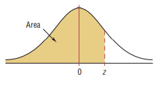
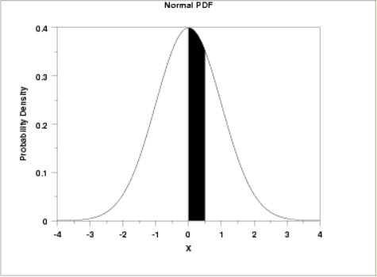

Statistics and Probability
Welcome to Our Site
I greet you this day,
These are the solutions to questions on Statistics and Probability.
The TI-84 Plus CE shall be used for applicable questions.
If you find these resources valuable/helpful, please consider making a donation:
Cash App: $ExamsSuccess or
cash.app/ExamsSuccess
PayPal: @ExamsSuccess or
PayPal.me/ExamsSuccess
Google charges me for the hosting of this website and my other
educational websites. It does not host any of the websites for free.
Besides, I spend a lot of time to type the questions and the solutions well.
As you probably know, I provide clear explanations on the solutions.
Your donation is appreciated.
Comments, ideas, areas of improvement, questions, and constructive criticisms are welcome.
Feel free to contact me. Please be positive in your message.
I wish you the best.
Thank you.
-
Symbols and Meanings
- $X$ = dataset $X$
- $x = x-values$ OR data values
- $x_{mid}$ = class midpoint of $x-values$ = class midpoint of the data values
- $\Sigma$ (pronounced as uppercase Sigma) = $summation$
- $\Sigma x$ = summation of the $x-values$
- $f = frequency$
- $F = frequency$
- $\Sigma f$ = summation of the frequencies
- $\Sigma fx$ = summation of the product of the $x-values$ and their corresponding frequencies
- $(\Sigma x)^2$ = square of the summation of the $x-values$
- $\Sigma x^2$ = summation of the squared of the $x-values$
- $\bar{x}$ is sample mean of the $x-values$
- $\mu$ = population mean
- $n$ = sample size
- $N$ = population size
- $\tilde{x}$ = median
- $\widehat{x}$ = mode
- $AM$ = assumed mean
- $D$ = deviation from the assumed mean
- $x_{MR}$ = midrange
- $LCL$ = lower class limit
- $UCL$ = upper class limit
- $min$ = minimum data value
- $max$ = maximum data value
- $LCB_{med}$ = lower class boundary of the median class
- $CW$ = class width
- $f_{med}$ = frequency of the median class
- $CF_{bmed}$ = cumulative frequency of the class before the median class
- $LCB_{mod}$ = lower class boundary of the modal class
- $f_{mod}$ = frequency of the modal class
- $f_{bmod}$ = frequency of the class before the modal class
- $f_{amod}$ = frequency of the class after the modal class
- $R$ = range
- $s$ = sample standard deviation
- $s^2$ = sample variance
- $\sigma$ = population standard deviation
- $\sigma^2$ = population variance
- $CV$ = coefficient of variation
- $z = z-score$
- $Q_1$ = lower quartile or first quartile
- $P_{25}$ = 25th percentile or first quartile
- $Q_2$ = middle quartile or second quartile or median
- $P_{50}$ = 50th percentile or median
- $Q_3$ = upper quartile or third quartile
- $P_{75}$ = 75th percentile or third quartile
- $IQR$ = interquartile range
- $SIQR$ = semi-interquartile range
- $MQ$ = midquartile
- $LF$ = lower fence
- $UF$ = upper fence
- $TM$ = trimmed mean
- $\Pi$ (pronounced as uppercase Pi) = $product$
- $\Pi x$ = product of the $x-values$
- $GM$ = geometric mean
- CL = Confidence Level or Level of Confidence or Confidence Coefficient
- CI = Confidence Interval or Interval Estimate
- LCL = Lower confidence limit
- UCL = Upper confidence limit
- LCI = Length of confidence interval
- α = Level of Significance or Significance Level
- $z_{\dfrac{\alpha}{2}}$ = critical z value separating an area or probability of $\dfrac{\alpha}{2}$ in the right tail.
- $-z_{\dfrac{\alpha}{2}}$ = critical z value separating an area or probability of $\dfrac{\alpha}{2}$ in the left tail.
- $z_{\alpha}$ = critical z value separating an area or probability of α in the right tail.
- $-z_{\alpha}$ = critical z value separating an area or probability of α in the left tail.
- p̂ = sample proportion or estimated proportion of successes or point estimate of the population proportion
- q̂ = estimated proportion of failures
- p = population proportion
- SE = standard error
- SEest = estimated standard error
- x = number of individuals in the sample with the specified characteristic
- n = sample size or minimum sample size
- N = population size
- E = margin or error or maximum error of estimation or error bound
- $\bar{x}$ = sample mean or point estimate of the population mean
- μ = population mean
- s = sample standard deviation
- s² = sample variance
- σ = population standard deviation
- σ² = population variance
- $t_{\dfrac{\alpha}{2}}$ = critical t value separating an area or probability of $\dfrac{\alpha}{2}$ in the right tail (use for one-tailed tests)
- $t_{\alpha}$ = critical t value separating an area or probability of α in the right tail (use for two-tailed tests)
- df = degrees of freedom
- Χ² = Chi-Square distribution
- Χ²R = right-tailed (upper-tail) critical values of the Chi-Square distribution
- Χ²L = left-tailed (lower-tail) critical values of the Chi-Square distribution
- CI for Population Proportion in plus-minus notation = p̂ ± E
- CI for Population Proportion in interval notation = (p̂ − E, p̂ + E)
- CI for Population Proportion in trilinear inequality = p̂ − E < p < p̂ + E
- CI for Population Mean in plus-minus notation = x̄ ± E
- CI for Population Mean in interval notation = (x̄ − E, x̄ + E)
- CI for Population Mean in trilinear inequality = x̄ − E < p < x̄ + E
Grouped Data
$
\underline{\text{Class Size or Class Width}} \\[3ex]
(1.)\;\; Class\:\:Width = \dfrac{Maximum - Minimum}{Number\:\:of\:\:classes} \\[5ex]
(2.)\;\; Class\:\:Width = LCI\:\:of\:\:2nd\:\:Class - LCI\:\:of\:\:1st\:\:Class \\[3ex]
(3.)\;\; Class\:\:Width = UCI\:\:of\:\:2nd\:\:Class - UCI\:\:of\:\:1st\:\:Class \\[3ex]
(4.)\;\; Class\:\:Width = UCB\:\:of\:\:a\:\:class - LCB\:\:of\:\:the\:\:same\:\:class \\[3ex]
(5.)\;\; Class\:\:Width = LCB\:\:of\:\:a\:\:Class - LCB\:\:of\:\:previous\:\:class \\[5ex]
\underline{\text{Frequency Density}} \\[3ex]
(6.)\;\; \text{Frequency Density} = \dfrac{\text{Frequency}}{\text{Class Width}} \\[7ex]
\underline{\text{Class Midpoints or Class Marks}} \\[3ex]
(7.)\;\; Class\:\:Width = LCB\:\:of\:\:a\:\:Class - LCB\:\:of\:\:previous\:\:class \\[5ex]
\underline{\text{Class Boundaries}} \\[3ex]
(8.)\;\; Lower\:\:Class\:\:Boundary\:\:of\:\:a\:\:class = \dfrac{LCI\:\:of\:\:that\:\:class +
UCI\:\:of\:\:previous/preceding\:\:class}{2} \\[5ex]
(9.)\;\; Upper\:\:Class\:\:Boundary\:\:of\:\:a\:\:class = \dfrac{UCI\:\:of\:\:that\:\:class +
LCI\:\:of\:\:next/succeeding\:\:class}{2} \\[5ex]
$
(10.) Shortcut for Class Boundaries
If the class intervals are integers:
Lower Class Boundary = Lower Class Interval − 0.5
Upper Class Boundary = Upper Class Interval + 0.5
If the class intervals are decimals in one decimal place:
Lower Class Boundary = Lower Class Interval − 0.05
Upper Class Boundary = Upper Class Interval + 0.05
If the class intervals are decimals in two decimal places:
Lower Class Boundary = Lower Class Interval − 0.005
Upper Class Boundary = Upper Class Interval + 0.005
...and so on and so forth.
$
\underline{\text{Relative Frequency}} \\[3ex]
(11.)\;\; RF\:\:of\:\:a\:\:class = \dfrac{Frequency\:\:of\:\:that\:\:class}{\Sigma Frequency} \\[7ex]
\underline{\text{Cumulative Frequency}} \\[3ex]
(12.)\;\; CF\:\:of\:\:1st\:\:Class = Frequency\:\:of\:\:1st\:\:Class \\[3ex]
CF\:\:of\:\:2nd\:\:Class = Frequency\:\:of\:\:1st\:\:Class + Frequency\:\:of\:\:2nd\:\:Class \\[3ex]
CF\:\:of\:\:3rd\:\:Class = Frequency\:\:of\:\:1st\:\:Class + Frequency\:\:of\:\:2nd\:\:Class +
Frequency\:\:of\:\:3rd\:\:Class \\[3ex]
CF = CF\:\:of\:\:Last\:\:Class = \Sigma Frequency
$
Measures of Center: Raw Data and Ungrouped Data
$ \underline{Sample\:\:Mean} \\[3ex] (1.)\:\: \bar{x} = \dfrac{\Sigma x}{n} \\[5ex] (2.)\:\: n = \Sigma f \\[3ex] (3.)\:\: \bar{x} = \dfrac{\Sigma fx}{\Sigma f} \\[5ex] \underline{Given\:\:an\:\:Assumed\:\:Mean} \\[3ex] (4.)\:\: D = x - AM \\[3ex] (5.)\:\: \bar{x} = AM + \dfrac{\Sigma D}{n} \\[5ex] (6.)\:\: \bar{x} = AM + \dfrac{\Sigma fD}{\Sigma f} \\[7ex] \underline{Population\:\:Mean} \\[3ex] (7.)\:\: \mu = \dfrac{\Sigma x}{N} \\[5ex] (8.)\:\: N = \Sigma f \\[3ex] \underline{Given\:\:an\:\:Assumed\:\:Mean} \\[3ex] (9.)\:\: D = x - AM \\[3ex] (10.)\:\: \mu = AM + \dfrac{\Sigma D}{N} \\[5ex] (11.)\:\: \mu = AM + \dfrac{\Sigma fD}{\Sigma f} \\[7ex] \underline{Median} \\[3ex] (12.)\:\: \tilde{x} = \left(\dfrac{\Sigma f + 1}{2}\right)th \:\:for\:\:sorted\:\:odd\:\:sample\:\:size \\[5ex] (13.)\:\: \tilde{x} = \left(\dfrac{\Sigma f}{2}\right)th \:\:for\:\:sorted\:\:even\:\:sample\:\:size \\[7ex] \underline{Mode} \\[3ex] (14.)\:\: Mode = x-value(s) \:\;with\:\:highest\:\:frequency \\[5ex] \underline{Midrange} \\[3ex] (15.)\:\: x_{MR} = \dfrac{min + max}{2} \\[5ex] \underline{Geometric\;\;Mean} \\[3ex] (16.)\;\; GM = \sqrt[n]{\prod\limits_{x=1}^n x} $
Measures of Center: Grouped Data
$ \underline{Class\:\:Midpoint} \\[3ex] (1.)\:\: x_{mid} = \dfrac{LCL + UCL}{2} \\[7ex] Equal\:\:Class\:\:Intervals\:(Same\:\:Class\:\:Size) \\[3ex] \underline{Mean} \\[3ex] (2.)\:\: \bar{x} = \dfrac{\Sigma fx_{mid}}{\Sigma f} \\[7ex] Equal\:\:Class\:\:Intervals\:(Same\:\:Class\:\:Size) \\[3ex] \underline{Given\:\:an\:\:Assumed\:\:Mean} \\[3ex] (3.)\:\: D = x_{mid} - AM \\[3ex] (4.)\:\: \bar{x} = AM + \dfrac{\Sigma fD}{\Sigma f} \\[7ex] \underline{Median} \\[3ex] (5.)\:\: \tilde{x} = LCB_{med} + \dfrac{CW}{f_{med}} * \left[\left(\dfrac{\Sigma f}{2}\right) - CF_{bmed}\right] \\[7ex] \underline{Mode} \\[3ex] (6.)\:\: \widehat{x} = LCB_{mod} + CW * \left[\dfrac{f_{mod} - f_{bmod}}{(f_{mod} - f_{bmod}) + (f_{mod} - f_{amod})}\right] $
Measures of Spread: Raw Data and Ungrouped Data
$ \underline{Range} \\[3ex] (1.)\:\: Range = max - min \\[3ex] \underline{Using\;\;Assumed\;\;Mean} \\[3ex] (2.)\;\; D = x - AM \\[5ex] \underline{Sample\:\:Variance} \\[3ex] \color{red}{First\:\:Formula} \\[3ex] (3.)\:\: s^2 = \dfrac{\Sigma(x - \bar{x})^2}{n - 1} \\[5ex] (4.)\:\: s^2 = \dfrac{\Sigma f(x - \bar{x})^2}{\Sigma f - 1} \\[5ex] \color{red}{Second\:\:Formula} \\[3ex] (5.)\:\: s^2 = \dfrac{n(\Sigma x^2) - (\Sigma x)^2}{n(n - 1)} \\[5ex] (6.)\:\: s^2 = \dfrac{\Sigma f(\Sigma fx^2) - (\Sigma fx)^2}{\Sigma f(\Sigma f - 1)} \\[7ex] \underline{Using\;\;Assumed\;\;Mean} \\[3ex] (7.)\;\; s^2 = \dfrac{\Sigma D^2}{n - 1} - \left(\dfrac{\Sigma D}{n - 1}\right)^2 \\[7ex] (8.)\;\; s^2 = \dfrac{\Sigma fD^2}{\Sigma f - 1} - \left(\dfrac{\Sigma fD}{\Sigma f - 1}\right)^2 \\[10ex] \underline{Population\:\:Variance} \\[3ex] \color{red}{First\:\:Formula} \\[3ex] (9.)\:\: \sigma^2 = \dfrac{\Sigma(x - \mu)^2}{N} \\[5ex] (10.)\:\: \sigma^2 = \dfrac{\Sigma f(x - \mu)^2}{\Sigma f} \\[5ex] \color{red}{Second\:\:Formula} \\[3ex] (11.)\:\: \sigma^2 = \dfrac{N(\Sigma x^2) - (\Sigma x)^2}{N^2} \\[5ex] (12.)\:\: \sigma^2 = \dfrac{\Sigma f(\Sigma fx^2) - (\Sigma fx)^2}{(\Sigma f)^2} \\[7ex] \underline{Using\;\;Assumed\;\;Mean} \\[3ex] (13.)\;\; \sigma^2 = \dfrac{\Sigma D^2}{N} - \left(\dfrac{\Sigma D}{N}\right)^2 \\[7ex] (14.)\;\; \sigma^2 = \dfrac{\Sigma fD^2}{\Sigma f} - \left(\dfrac{\Sigma fD}{\Sigma f}\right)^2 \\[10ex] \underline{Sample\:\:Standard\:\:Deviation} \\[3ex] \color{red}{First\:\:Formula} \\[3ex] (15.)\:\: s = \sqrt{\dfrac{\Sigma(x - \bar{x})^2}{n - 1}} \\[5ex] (16.)\:\: s = \sqrt{\dfrac{\Sigma f(x - \bar{x})^2}{\Sigma f - 1}} \\[5ex] \color{red}{Second\:\:Formula} \\[3ex] (17.)\:\: s = \sqrt{\dfrac{n(\Sigma x^2) - (\Sigma x)^2}{n(n - 1)}} \\[5ex] (18.)\:\: s = \sqrt{\dfrac{\Sigma f(\Sigma fx^2) - (\Sigma fx)^2}{\Sigma f(\Sigma f - 1)}} \\[7ex] \underline{Using\;\;Assumed\;\;Mean} \\[3ex] (19.)\;\; s = \sqrt{\dfrac{\Sigma D^2}{n - 1} - \left(\dfrac{\Sigma D}{n - 1}\right)^2} \\[7ex] (20.)\;\; s = \sqrt{\dfrac{\Sigma fD^2}{\Sigma f - 1} - \left(\dfrac{\Sigma fD}{\Sigma f - 1}\right)^2} \\[10ex] \underline{Population\:\:Standard\:\:Deviation} \\[3ex] \color{red}{First\:\:Formula} \\[3ex] (21.)\:\: \sigma = \sqrt{\dfrac{\Sigma(x - \mu)^2}{N}} \\[5ex] (22.)\:\: \sigma = \sqrt{\dfrac{\Sigma f(x - \mu)^2}{\Sigma f}} \\[5ex] \color{red}{Second\:\:Formula} \\[3ex] (23.)\:\: \sigma = \dfrac{\sqrt{N(\Sigma x^2) - (\Sigma x)^2}}{N} \\[5ex] (24.)\:\: \sigma = \dfrac{\sqrt{\Sigma f(\Sigma fx^2) - (\Sigma fx)^2}}{\Sigma f} \\[7ex] \underline{Using\;\;Assumed\;\;Mean} \\[3ex] (25.)\;\; \sigma = \sqrt{\dfrac{\Sigma D^2}{N} - \left(\dfrac{\Sigma D}{N}\right)^2} \\[7ex] (26.)\;\; \sigma = \sqrt{\dfrac{\Sigma fD^2}{\Sigma f} - \left(\dfrac{\Sigma fD}{\Sigma f}\right)^2} \\[10ex] \underline{Range\:\:Rule\:\:of\:\:Thumb} \\[3ex] Approximate\:\:Value\:\:of\:\:Calculating\:\:Standard\:\:Deviation \\[3ex] (27.)\:\: s = \dfrac{Range}{4} = \dfrac{max - min}{4} \\[7ex] \underline{Interquartile\:\:Range} \\[3ex] (28.)\:\: IQR = Q_3 - Q_1 \\[5ex] \underline{Coefficient\:\:of\:\:Variation\:\:for\:\:Sample} \\[3ex] (29.)\:\: CV = \dfrac{s}{x} * 100 ...in\:\:\% \\[7ex] \underline{Coefficient\:\:of\:\:Variation\:\:for\:\:Population} \\[3ex] (30.)\:\: CV = \dfrac{\sigma}{x} * 100 ...in\:\:\% \\[7ex] \underline{Mean\:\:Absolute\:\:Deviation} \\[3ex] (31.)\:\: MAD = \dfrac{\Sigma |x - \bar{x}|}{n} \\[5ex] \underline{Mean\:\:Absolute\:\:Deviation} \\[3ex] (32.)\:\: MAD = \dfrac{\Sigma f|x - \bar{x}|}{\Sigma f} \\[5ex] $
Measures of Spread: Grouped Data
$ \underline{Class\:\:Midpoint} \\[3ex] (1.)\:\: x_{mid} = \dfrac{LCL + UCL}{2} \\[5ex] \underline{Using\;\;Assumed\;\;Mean} \\[3ex] (2.)\;\; D = x_{mid} - AM \\[5ex] \underline{Sample\:\:Variance} \\[3ex] \color{red}{First\:\:Formula} \\[3ex] (3.)\:\: s^2 = \dfrac{\Sigma f(x_{mid} - \bar{x})^2}{\Sigma f - 1} \\[5ex] \color{red}{Second\:\:Formula} \\[3ex] (4.)\:\: s^2 = \dfrac{\Sigma f(\Sigma fx_{mid}^2) - (\Sigma fx_{mid})^2}{\Sigma f(\Sigma f - 1)} \\[5ex] \underline{Using\;\;Assumed\;\;Mean} \\[3ex] (5.)\;\; s^2 = \dfrac{\Sigma D^2}{n - 1} - \left(\dfrac{\Sigma D}{n - 1}\right)^2 \\[7ex] (6.)\;\; s^2 = \dfrac{\Sigma fD^2}{\Sigma f - 1} - \left(\dfrac{\Sigma fD}{\Sigma f - 1}\right)^2 \\[10ex] \underline{Sample\:\:Standard\:\:Deviation} \\[3ex] \color{red}{First\:\:Formula} \\[3ex] (7.)\:\: s = \sqrt{\dfrac{\Sigma f(x_{mid} - \bar{x})^2}{\Sigma f - 1}} \\[5ex] \color{red}{Second\:\:Formula} \\[3ex] (8.)\:\: s = \sqrt{\dfrac{\Sigma f(\Sigma fx_{mid}^2) - (\Sigma fx_{mid})^2}{\Sigma f(\Sigma f - 1)}} \\[5ex] \underline{Using\;\;Assumed\;\;Mean} \\[3ex] (9.)\;\; s = \sqrt{\dfrac{\Sigma D^2}{n} - \left(\dfrac{\Sigma D}{n - 1}\right)^2} \\[7ex] (10.)\;\; s = \sqrt{\dfrac{\Sigma fD^2}{\Sigma f - 1} - \left(\dfrac{\Sigma fD}{\Sigma f - 1}\right)^2} \\[10ex] \underline{Population\:\:Variance} \\[3ex] \color{red}{First\:\:Formula} \\[3ex] (11.)\:\: \sigma^2 = \dfrac{\Sigma f(x_{mid} - \bar{x})^2}{\Sigma f} \\[5ex] \color{red}{Second\:\:Formula} \\[3ex] (12.)\:\: \sigma^2 = \dfrac{\Sigma f(\Sigma fx_{mid}^2) - (\Sigma fx_{mid})^2}{\Sigma f(\Sigma f)} \\[5ex] \underline{Using\;\;Assumed\;\;Mean} \\[3ex] (13.)\;\; \sigma^2 = \dfrac{\Sigma D^2}{N} - \left(\dfrac{\Sigma D}{N}\right)^2 \\[7ex] (14.)\;\; \sigma^2 = \dfrac{\Sigma fD^2}{\Sigma f} - \left(\dfrac{\Sigma fD}{\Sigma f}\right)^2 \\[10ex] \underline{Population\:\:Standard\:\:Deviation} \\[3ex] \color{red}{First\:\:Formula} \\[3ex] (15.)\:\: \sigma = \sqrt{\dfrac{\Sigma f(x_{mid} - \bar{x})^2}{\Sigma f}} \\[5ex] \color{red}{Second\:\:Formula} \\[3ex] (16.)\:\: \sigma = \sqrt{\dfrac{\Sigma f(\Sigma fx_{mid}^2) - (\Sigma fx_{mid})^2}{\Sigma f(\Sigma f)}} \\[5ex] \underline{Using\;\;Assumed\;\;Mean} \\[3ex] (17.)\;\; \sigma = \sqrt{\dfrac{\Sigma D^2}{N} - \left(\dfrac{\Sigma D}{N}\right)^2} \\[7ex] (18.)\;\; \sigma = \sqrt{\dfrac{\Sigma fD^2}{\Sigma f} - \left(\dfrac{\Sigma fD}{\Sigma f}\right)^2} \\[10ex] $
Measures of Position
A data value is usual if $-2.00 \le z-score \le 2.00$
A data value is unusual if $z-score \lt -2.00$ OR $z-score \gt 2.00$
$
\underline{Sample} \\[3ex]
Minimum\:\:usual\:\:data\:\:value = \bar{x} - 2s \\[3ex]
Maximum\:\:usual\:\:data\:\:value = \bar{x} + 2s \\[5ex]
\underline{Population} \\[3ex]
Minimum\:\:usual\:\:data\:\:value = \mu - 2\sigma \\[3ex]
Maximum\:\:usual\:\:data\:\:value = \mu + 2\sigma \\[5ex]
\underline{z\:\:score\:\:for\:\:Sample} \\[3ex]
(1.)\:\: z = \dfrac{x - \bar{x}}{s} \\[7ex]
\underline{z\:\:score\:\:for\:\:Population} \\[3ex]
(2.)\:\: z = \dfrac{x - \mu}{\sigma} \\[7ex]
\underline{Quantiles(Percentiles,\:Deciles,\:Quintiles,\:and\:Quartiles)} \\[3ex]
\color{red}{Convert\:\:a\:\:Data\:\:value\:\:to\:\:a\:\:Quantile} \\[3ex]
x\:\:and\:\:y\:\:are\:\:two\:\:different\:\:variables \\[3ex]
(3.)\:\: Percentile\:\:of\:\:x =
\dfrac{number\:\:of\:\:values\:\:less\:\:than\:\:x}{total\:\:number\:\:of\:\:values} * 100 = yth\:\:Percentile
\\[5ex]
(4.)\:\: Decile\:\:of\:\:x =
\dfrac{number\:\:of\:\:values\:\:less\:\:than\:\:x}{total\:\:number\:\:of\:\:values} * 10 = yth\:\:Decile
\\[5ex]
(5.)\:\: Quintile\:\:of\:\:x =
\dfrac{number\:\:of\:\:values\:\:less\:\:than\:\:x}{total\:\:number\:\:of\:\:values} * 5 = yth\:\:Quintile
\\[5ex]
(6.)\:\: Quartile\:\:of\:\:x =
\dfrac{number\:\:of\:\:values\:\:less\:\:than\:\:x}{total\:\:number\:\:of\:\:values} * 4 = yth\:\:Quartile
\\[7ex]
\color{red}{Convert\:\:a\:\:Quantile\:\:to\:\:a\:\:Data\:\:Value} \\[3ex]
Calculate\:\:the\:\:xth\:\:position\:\:of\:\:the\:\:yth\:\:Quantile \\[3ex]
(7.)\:\: xth\:\:position = \dfrac{yth\:\:Percentile}{100} * total\:\:number\:\:of\:\:values \\[5ex]
(8.)\:\: xth\:\:position = \dfrac{yth\:\:Decile}{10} * total\:\:number\:\:of\:\:values \\[5ex]
(9.)\:\: xth\:\:position = \dfrac{yth\:\:Quintile}{5} * total\:\:number\:\:of\:\:values \\[5ex]
(10.)\:\: xth\:\:position = \dfrac{yth\:\:Quartile}{4} * total\:\:number\:\:of\:\:values \\[7ex]
$
| If the $xth$ position | then, |
|---|---|
| is an integer |
$xth\:\:position = \dfrac{xth\:\:position + (x + 1)th\:\;position}{2}$ In other words, find the value of the $xth$ position; find the value of the next position; and determine the mean of the two values. |
| is not an integer | $xth$ position is rounded up |
$ \underline{The\:\:Five-Number\:\:Summary\:\:of\:\:Data} \\[3ex] (11.)\:\: Minimum\:(min) \\[3ex] (12.)\:\: Lower\:\:Quartile\:(Q_1) \\[3ex] (13.)\:\: Median\:\:or\:\:Middle\:\:Quartile\:(Q_2) \\[3ex] (14.)\:\: Upper\:\:Quartile\:(Q_3) \\[3ex] (15.)\:\: Maximum\:(Max) \\[5ex] \underline{Other\:\:Statistics\:\:from\:\:Quantiles} \\[3ex] (16.)\:\: IQR = Q_3 - Q_1 \\[3ex] (17.)\:\: SIQR = \dfrac{IQR}{2} = \dfrac{Q_3 - Q_1}{2} \\[5ex] (18.)\:\: MQ = \dfrac{Q_3 + Q_1}{2} \\[5ex] (19.)\:\: Upper\:\:Quartile\:(Q_3) \\[3ex] (20.)\:\: LF = Q_1 - 1.5(IQR) \\[3ex] (21.)\:\: UF = Q_3 + 1.5(IQR) $
Probability
Given any two events say A and B
$
P(E) = \dfrac{n(E)}{n(S)} \\[5ex]
\underline{\text{Addition Rule}} \\[3ex]
\dfrac{n(A \cup B)}{n(S)} = \dfrac{n(A)}{n(S)} + \dfrac{n(B)}{n(S)} - \dfrac{n(A \cap B)}{n(S)} \\[5ex]
P(A \cup B) = P(A) + P(B) - P(A \cap B) \\[3ex]
P(A\:\:\:OR\:\:\:B) = P(A) + P(B) - P(A\:\:\:AND\:\:\:B) \\[5ex]
$
For Independent Events
$
P(B|A) = P(B) \\[3ex]
\rightarrow P(A\:\:\:OR\:\:\:B) = P(A) + P(B) - [P(A) * P(B)] \\[5ex]
$
For Dependent Events
$
P(B|A) = P(B|A) \\[3ex]
\rightarrow P(A\:\:\:OR\:\:\:B) = P(A) + P(B) - [P(A) * P(B|A)] \\[5ex]
$
For Mutually Exclusive Events (Disjoint Events)
$
P(A \cap B) = 0 \\[3ex]
P(A\:\:\:OR\:\:\:B) = P(A) + P(B) - 0 \\[3ex]
\rightarrow P(A\:\:\:OR\:\:\:B) = P(A) + P(B) \\[5ex]
$
$
\underline{\text{Multiplication Rule}} \\[3ex]
P(A\:\:\:AND\:\:\:B) = P(A) * P(B|A) \\[3ex]
P(A \cap B) = P(A) * P(B|A) \\[3ex]
P(A\:\:\:AND\:\:\:B) = P(A \cap B) \\[5ex]
$
$P(B|A)$ is read as: the probability of event $B$ given event $A$
For Independent Events
$
P(B|A) = P(B) \\[3ex]
\rightarrow P(A\:\:\:AND\:\:\:B) = P(A) * P(B) \\[5ex]
$
For Dependent Events
$
P(B|A) = P(B|A) \\[3ex]
\rightarrow P(A\:\:\:AND\:\:\:B) = P(A) * P(B|A) \\[5ex]
$
The complement of Event $A$ is $A'$
$
\underline{Complementary\;\;Rule} \\[3ex]
P(A) + P(A') = 1 \\[3ex]
\rightarrow P(A') = 1 - P(A) \\[5ex]
$
Other Formulas
$
(1.)\;\; P(A) = P(A \cap B') + P(A \cap B)
$
Probability Distributions
$
\boldsymbol{Probability\;\;Distribution} \\[3ex]
(1.)\;\;\mu = \Sigma[x * P(x)] \\[3ex]
(2.)\;\;E = \Sigma[x * P(x)] \\[3ex]
(3.)\;\; \sigma = \sqrt{\Sigma[x^2 * P(x)] - \mu^2} \\[7ex]
\boldsymbol{Combinatorics} \\[3ex]
(1.)\:\: 0! = 1 \\[3ex]
(2.)\:\: n! = n * (n - 1) * (n - 2) * (n - 3) * ... * 1 \\[3ex]
(3.)\;\; n! = n * (n - 1)! \\[3ex]
(4.)\;\; n! = (n - 1) * (n - 2)!...among\;\;others \\[3ex]
(5.)\:\: C(n, x) = \dfrac{n!}{(n - x)!x!} \\[5ex]
(6.)\;\; C(n, x) = C(n, n - x) \\[7ex]
\boldsymbol{Binomial\;\;Distribution} \\[3ex]
(1.)\;\; p + q = 1 \\[3ex]
(2.)\;\; \mu = n * p \\[3ex]
(3.)\;\; \sigma = \sqrt{n * p * q} \\[4ex]
(4.)\;\; P(x) = C(n, x) * p^x * q^{n - x}...\text{Depends on the context of the question} \\[5ex]
where \\[3ex]
x = \text{number of successes/failures} \\[3ex]
n = \text{number of trials} = 12 \\[3ex]
C(n, x) = \text{Binomial coefficient} \\[3ex]
P(x) = \text{Probability of the number of successes/failures} \\[3ex]
p = \text{probability of success} = 70\% = 0.7 \\[3ex]
q = \text{probability of failure} = 1 - 0.7 = 0.3 \\[5ex]
\boldsymbol{Poisson\;\;Distribution} \\[3ex]
(1.)\;\;P(x) = \dfrac{\mu^x * e^{-\mu}}{x!} \\[5ex]
(2.)\;\; \mu = \sigma^2 \\[7ex]
\boldsymbol{Normal\;\;Distribution} \\[3ex]
(1.)\;\; z = \dfrac{x - \bar{x}}{s} \\[5ex]
(2.)\;\; x = \bar{x} + zs \\[3ex]
(3.)\;\; z = \dfrac{x - \mu}{\sigma} \\[5ex]
(4.)\;\; x = \mu + z\sigma \\[3ex]
(5.)\;\;\text{Probability Density Function},\;\;P(x) =
\dfrac{1}{\sigma\sqrt{2\pi}}e^{{-\dfrac{1}{2}}\left(\dfrac{x - \mu}{\sigma}\right)^2} \\[7ex]
$
Empirical Rule (68 - 95 - 99.7 percent Rule)
(Applies only to Normal Distribution)
(a.) 68% of the data lie within (below and above) 1 standard deviation of the mean
(b.) 95% of the data lie within (below and above) 2 standard deviations of the mean
(c.) 99.7% of the data lie within (below and above) 3 standard deviations of the mean
Pafnuty Chebyshev's Theorem
(Applies to any distribution)
At least $\left(1 - \dfrac{1}{k^2}\right) * 100$ % of the data lie within $k$ standard deviations of the mean
implies
At least $\left(1 - \dfrac{1}{k^2}\right) * 100$ % of the data lie within $\mu - k\sigma$ and $\mu + k\sigma$
Range Rule of Thumb
Minimum Usual Value = μ - 2σ
Maximum Usual Value = μ + 2σ
A data value is unusual if it is less than the minimum usual value or greater than the
maximum usual value
z-score Boundary
A data value is usual if −2.00 ≤ z-score ≤ 2.00
A data value is unusual if z-score < −2.00 or if z-score > 2.00
Critical z-values
| Significance Level, α | Confidence Level, CL | critical z value separating an area or probability of $\dfrac{\alpha}{2}$ in the right tail, $z_{\dfrac{\alpha}{2}}$ |
|---|---|---|
| 1% (0.01) | 99% (0.99) | 2.575829306443923 ≈ 2.576 |
| 5% (0.05) | 95% (0.95) | 1.9599639861189817 ≈ 1.96 |
| 10% (0.1) | 90% (0.9) | 1.6448536251332162 ≈ 1.64 |
Inferential Statistics: Population Proportion
$ (1.)\;\; \alpha = 1 - CL ...\text{in decimal} \\[5ex] (2.)\:\: \hat{p} = \dfrac{x}{n} \\[5ex] (3.)\:\: \hat{p} + \hat{q} = 1 \\[5ex] (4.)\;\; \hat{p} = \dfrac{UCL + LCL}{2} \\[5ex] (5.)\;\; E = \dfrac{UCL - LCL}{2} \\[5ex] (6.)\:\: E = z_{\dfrac{\alpha}{2}} * \sqrt{\dfrac{\hat{p} * \hat{q}}{n}} \\[7ex] (7.)\;\; n = \dfrac{0.25 * \left(z_{\dfrac{\alpha}{2}}\right)^2}{E^2} \\[7ex] (8.)\;\; n = \dfrac{\left(z_{\dfrac{\alpha}{2}}\right)^2 * \hat{p} * \hat{q}}{E^2} $
Inferential Statistics: Population Mean
$ (1.)\;\; \alpha = 1 - CL ...in\;\;decimal \\[5ex] (2.)\;\; LCI = UCL - LCL \\[5ex] (3.)\:\: \bar{x} = \dfrac{\Sigma x}{n} \\[7ex] (4.)\:\: \bar{x} = \dfrac{UCL + LCL}{2} \\[7ex] (5.)\;\; E = \dfrac{UCL - LCL}{2} \\[7ex] (6.)\;\; LCI = 2E \\[5ex] (7.)\;\; SE = \dfrac{\sigma}{\sqrt{n}} \\[7ex] (8.)\:\: E = \dfrac{\sigma * z_{\dfrac{\alpha}{2}}}{\sqrt{n}} \\[10ex] (9.)\;\; E = \dfrac{s * t_{\dfrac{\alpha}{2}}}{\sqrt{n}} \\[10ex] (10.)\;\; n = \left(\dfrac{\sigma * z_{\dfrac{\alpha}{2}}}{E}\right)^2 \\[10ex] (11.)\;\; n = \left(\dfrac{s * t_{\dfrac{\alpha}{2}}}{E}\right)^2 \\[10ex] $


